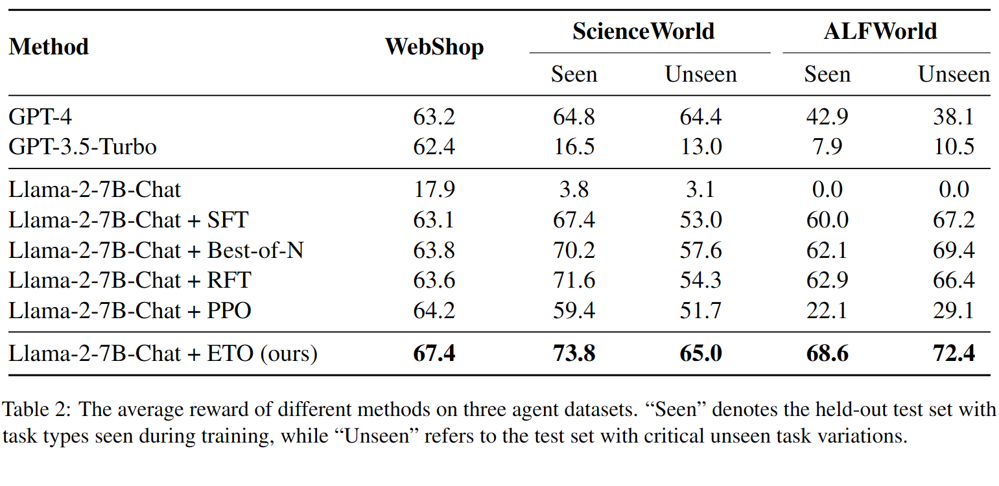

We present ETO, an Exploration-based Trajectory Optimization approach, for LLM agent policy learning. ETO allows an LLM agent to iteratively collect failure trajectories and updates its policy by learning from contrastive failure-success trajectory pairs.
ETO has following features:
-
🕹️ Learning by Trial and Error
- 🎲 Learning from Failure Trajectories. Contrary to previous approaches that exclusively train on successful expert trajectories, ETO allows agents to learn from their exploration failures.
- 🎭 Contrastive Trajectory Optimization. ETO applies DPO loss to perform policy learning from failure-success trajectory pairs.
- 🌏 Iterative Policy Learning. ETO can be expanded to multiple rounds for further policy enhancement.
-
🎖️ Superior Performance
- ⚔️ Effectiveness on Three Datasets. ETO significantly outperforms strong baselines, such as RFT, PPO, on WebShop, ScienceWorld, and ALFWorld.
- 🦾 Generalization on Unseen Scenarios. ETO demonstrates an impressive performance improvement of 22% over SFT on the challenging out-of-distribution test set in ScienceWorld.
- ⌛ Task-Solving Efficiency. ETO achieves higher rewards within fewer action steps on ScienceWorld.
- 💡 Potential in Extreme Scenarios. ETO shows better performance in self-play scenarios where expert trajectories are not available.
Overview

-
Behavioral Cloning:
- The base agent is trained by supervised fine-tuning (SFT) on expert trajectories.
-
Exploration Phase:
- The agent explores the environment to the get the trajectories on the instructions of training data for BC.
- Failure trajectories are collected to create contrastive trajectory pairs.
-
Training Phase:
- The agent utilizes these trajectory preference pairs to update its policy using contrastive learning methods like DPO.
Comparisons with Other Benchmarks
ETO is evaluated on three representative agent datasets: WebShop for web navigation, ScienceWorld for simulated science experiments, ALFWorld for embodied household tasks.
We find that ETO consistently outperforms all other baseline agent by a large margin on all three datasets. In out-of-distribution unseen scenarios, ETO also shows its effectiveness, achieving an impressive performance boost of 20% on ScienceWorld-Unseen.
Experimental Results
ETO is evaluated on three representative agent datasets: WebShop for web navigation, ScienceWorld for simulated science experiments, ALFWorld for embodied household tasks.
We find that ETO consistently outperforms all other baseline agent by a large margin on all three datasets. In out-of-distribution unseen scenarios, ETO also shows its effectiveness, achieving an impressive performance boost of 20% on ScienceWorld-Unseen.
Case Study
ETO is evaluated on three representative agent datasets: WebShop for web navigation, ScienceWorld for simulated science experiments, ALFWorld for embodied household tasks.
We find that ETO consistently outperforms all other baseline agent by a large margin on all three datasets. In out-of-distribution unseen scenarios, ETO also shows its effectiveness, achieving an impressive performance boost of 20% on ScienceWorld-Unseen.
BibTeX
@article{liu2024webbench,
author={Junpeng Liu and Yifan Song and Bill Yuchen Lin and Wai Lam and Graham Neubig and Yuanzhi Li and Xiang Yue},
title={WebBench: How Far Have Multimodal LLMs Evolved in Web Page Understanding and Grounding?},
year={2024},
eprint={2404.99999},
archivePrefix={arXiv},
primaryClass={cs.CL}
}